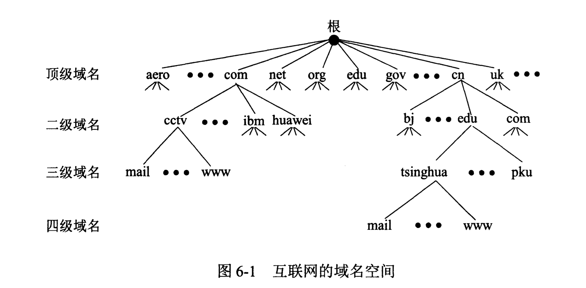
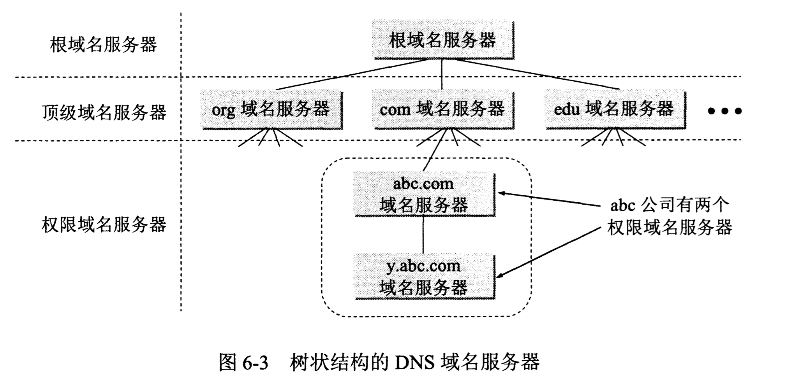
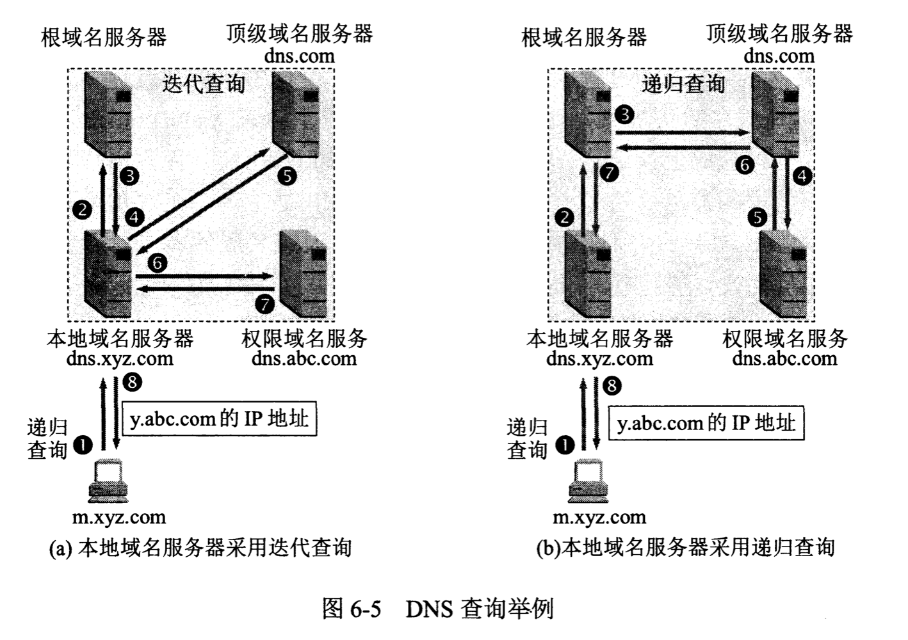

计算机网络/应用层/域名系统DNS
# 应用层概述 应用层协议为不同的网络应用的应用进程之间的通信提供规则。每个应用层协议都是为了解决某一类的应用问题，而问题的解决又要通过位于不同主机的多个应用进程之间的通信和协同工作来完成。应用层的具体内容就是精确定义这些通信规则。
域名系统概述
域名系统DNS(Domain Name System)是互联网使用的命名系统，用来把便于人们使用的机器名称转换为IP地址。
互联网的域名系统DNS被设计成为一个联机分布式数据库系统，并采用客户服务器方式。
当某一个应用进程需要把主机名解析为IP地址时，该应用进程就调用解析程序(resolver)，并称为DNS的一个客户，把待解析的域名放在DNS请求报文中，以UDP用户数据报的方式发给本地域名服务器。本地域名服务器在查找域名后，把对应的IP地址放在回答报文中返回。应用进程获得目的主机的IP地址后即可进行通信。
若本地域名服务器不能回答该请求，则此域名服务器就暂时称为DNS的另一个客户，并向其他域名服务器发出查询请求。这种过程直至找到能够回答该请求的域名服务器为止。
互联网的域名结构
互联网采用层次树状结构的命名方法。
每一个域名都由标号(label)序列组成，而各标号之间用点隔开。DNS规定，域名中的标号都由英文字母和数字组成，每一个标号不超过63个字符（但为了记忆方便，最好不要超过12个字符），不区分大小写。标号中除连字符(-)外不能使用其他的标点符号。级别最低的域名写在最左边，级别最高的域名写在最右边。由多个标号组成的完整域名总共不超过255个字符。

顶级域名：
1. 国家顶级域名nTLD：如cn（中国），us（美国）等等。
2. 通用顶级域名gTLD：如com（公司企业），org（非营利组织），net（网络服务机构）等等。
3. 基础服务结构域名：只有一个，即arpa，用于反向域名解析。
二级域名，我国把二级域名划分为两类：
1. 类别域名：如ac（科研机构），com（企业），edu（教育机构）等等。
2. 行政区域名：如bj（北京市），js（江苏省）等等。
域名服务器
上面讲述的域名体系是抽象的。但具体实现域名系统则是使用分布在各地的域名服务器。理论上，可以让每一级的域名都有一个相对应的域名服务器，但这样会使服务器数量太多，运行效率降低。因此DNS就采用划分区的办法来解决这个问题。
一个服务器所负责管辖的（或有权限的）范围叫做区(zone)。每一个区设置响应的权限域名服务器，用来保存该区中所有主机的域名到IP地址的映射。区是“域”的子集。

- 根域名服务器(root name server)：根域名服务器是最高层次的域名服务器，也是最重要的域名服务器。所有的根服务器都知道所有的顶级域名服务器的域名和IP地址。不管是哪一个本地域名服务器，只要自己无法解析，就首先求助于根域名服务器。全球共有13组根服务器，分布在588个地点(IPv4)。代号A~M。采用任播技术。在许多情况下，根域名服务器并不直接把待查询的域名直接转换成IP地址，而是告诉本地域名服务器下一步应当找哪一个顶级域名服务器进行查询。
- 顶级域名服务器（TLD服务器）：负责管理在该顶级域名服务器注册的所有二级域名。当收到DNS查询请求时，可能给出最后的结果，也可能是下一步应当找的域名服务器的IP地址。
- 权限域名服务器：负责一个区的域名服务器。当一个权限域名服务器不能给出最后的查询回答时，就告诉DNS客户，下一步应当找哪一个权限域名服务器。
- 本地域名服务器(local name server)：当一台主机发出DNS查询请求时，这个查询请求就发送给本地域名服务器。非常的重要。
域名解析过程：
1. 本机向本地域名服务器的查询一般都是采用递归查询。即“你帮我查”。
2. 本地服务器向根服务器的查询一般是采用迭代查询。即“你告诉我怎么查”。

为了提高DNS的查询效率，在域名服务器中广泛使用了高速缓存。高速缓存用来存放最近查询过的域名已经从何处获得域名映射信息的记录。
参考文献：《计算机网络（第7版）》谢希仁著。